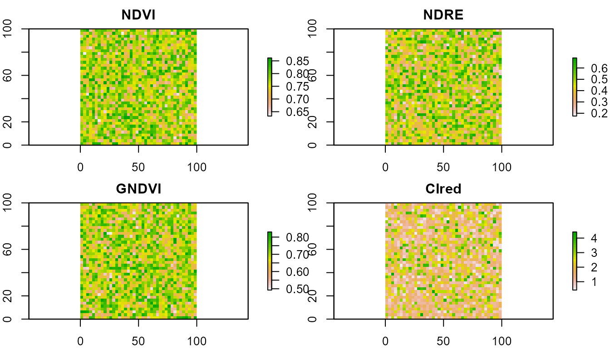
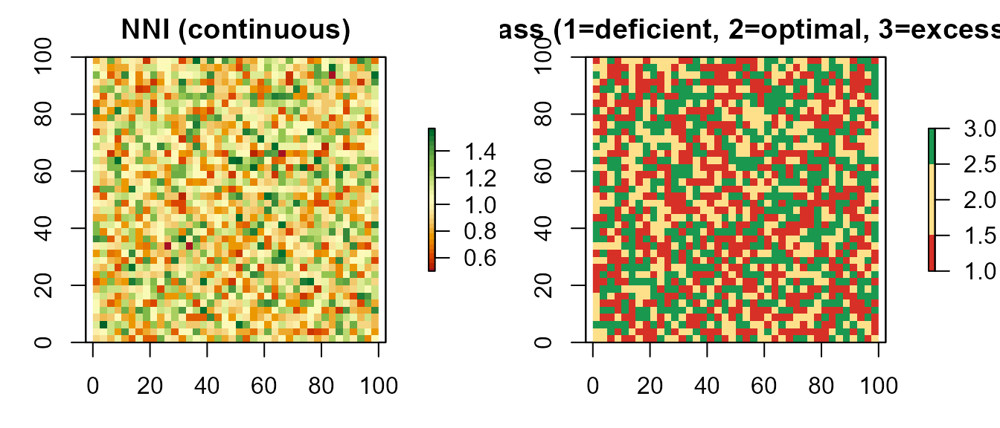
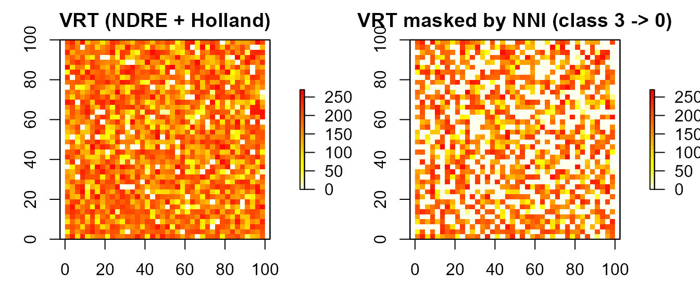

vignettes/remote-sensing-diagnosis.Rmd
remote-sensing-diagnosis.RmdThis vignette demonstrates the remote-sensing diagnosis pipeline added in NFert 0.7.0:
compute_vi().compute_NNI() / diagnose_N_status(), using the
species-specific critical nitrogen dilution curve of Lemaire &
Gastal (1997).variable_rate_N()) so that the applied dose responds to
the NNI diagnosis rather than to a raw vegetation index alone.Why this matters: NDVI saturates at LAI > 3–4. In mid- to late-vegetative stages (GS30+ for winter wheat; V8+ for maize) red-edge indices (NDRE, CIred-edge) are far more sensitive to canopy N status. And all of those indices are still just proxies: the scientifically correct diagnostic variable is the NNI, which uses the dilution curve to convert biomass + N% into a dimensionless deficiency / sufficiency index.
In a real application the multi-band input comes from a Sentinel-2 L2A scene or a UAV multispectral flight. Here we synthesise a small stack so the vignette is reproducible offline.
library(NFert)
library(raster)
#> Loading required package: sp
set.seed(1)
template <- raster(nrows = 40, ncols = 40,
xmn = 0, xmx = 100, ymn = 0, ymx = 100)
# Plausible canopy reflectances (fraction 0-1)
B03 <- setValues(template, runif(ncell(template), 0.05, 0.12)) # green
B04 <- setValues(template, runif(ncell(template), 0.04, 0.08)) # red
B05 <- setValues(template, runif(ncell(template), 0.10, 0.25)) # red-edge
B08 <- setValues(template, runif(ncell(template), 0.35, 0.55)) # NIR
s2 <- stack(B03, B04, B05, B08)
names(s2) <- c("B03", "B04", "B05", "B08")compute_vi() computes any of NDVI, NDRE, GNDVI,
CIred-edge, MCARI, MSAVI2 from the stack, with configurable band
mapping. Default mapping follows Sentinel-2 L2A naming.
ndvi <- compute_vi(s2, "NDVI")
ndre <- compute_vi(s2, "NDRE")
gndvi <- compute_vi(s2, "GNDVI")
cire <- compute_vi(s2, "CIred")
summary(getValues(ndvi))
#> Min. 1st Qu. Median Mean 3rd Qu. Max.
#> 0.6329 0.7314 0.7662 0.7655 0.8055 0.8615
summary(getValues(ndre))
#> Min. 1st Qu. Median Mean 3rd Qu. Max.
#> 0.1751 0.3596 0.4406 0.4456 0.5384 0.6886
par(mfrow = c(2, 2), mar = c(2, 2, 2, 3))
plot(ndvi, main = "NDVI", col = rev(terrain.colors(30)))
plot(ndre, main = "NDRE", col = rev(terrain.colors(30)))
plot(gndvi, main = "GNDVI", col = rev(terrain.colors(30)))
plot(cire, main = "CIred", col = rev(terrain.colors(30)))
NDVI and GNDVI typically cluster in a narrow range for closed canopies (saturation); NDRE and CIred-edge preserve variability at high biomass. That is why the red-edge indices are the reference for N diagnosis in GS30+ / V8+.
critical_N_curve() returns the (a, b, W_min)
coefficients of the species-specific critical nitrogen dilution curve.
Italian synonyms are accepted.
critical_N_curve("wheat")
#> $a
#> [1] 5.35
#>
#> $b
#> [1] 0.44
#>
#> $W_min
#> [1] 1.55
#>
#> $reference
#> [1] "Justes et al. 1994"
critical_N_curve("mais") # italian
#> $a
#> [1] 3.4
#>
#> $b
#> [1] 0.37
#>
#> $W_min
#> [1] 1
#>
#> $reference
#> [1] "Plenet & Lemaire 2000"The curve is Nc = a * W^(-b), where Nc is the critical N concentration (% DM) and W the aboveground dry biomass (t DM / ha). Defaults come from Justes 1994 (wheat), Plenet & Lemaire 2000 (maize), Sheehy 1998 (rice), Colnenne 1998 (rapeseed), Duru 1997 (grass), van Oosterom 2010 (sorghum), Debaeke 2012 (sunflower).
# Winter wheat at GS30: N% = 3.2, biomass = 2.5 t DM / ha
compute_NNI(N_content = 3.2, biomass = 2.5,
crop = "wheat", is_percent = TRUE)
#> [1] 0.8951376
# -> ~0.94 : slightly deficient
# Maize at V8: N% = 2.8, biomass = 4 t DM / ha
compute_NNI(2.8, 4, crop = "maize", is_percent = TRUE)
#> [1] 1.375439
# -> ~1.5 : luxury consumptionIn a realistic workflow biomass (W) and N concentration (N%) are both raster layers, derived from remote sensing + empirical relationships. Here we illustrate with two synthetic layers that emulate the output of a biomass retrieval model + a leaf-N retrieval model.
# Synthetic biomass and N% layers
w_map <- setValues(template, runif(ncell(template), 1.5, 6.0))
n_map <- setValues(template, runif(ncell(template), 2.2, 3.9))
d <- diagnose_N_status(N_content = n_map, biomass = w_map,
crop = "wheat", is_percent = TRUE)
par(mfrow = c(1, 2), mar = c(3, 3, 2, 4))
plot(d$NNI,
main = "NNI (continuous)",
col = hcl.colors(30, "RdYlGn"))
plot(d$class,
main = "NNI class (1=deficient, 2=optimal, 3=excessive)",
col = c("#d73027", "#fee08b", "#1a9850"))
d$summary
#> $counts
#> $counts$deficient
#> [1] 588
#>
#> $counts$optimal
#> [1] 465
#>
#> $counts$excessive
#> [1] 547
#>
#>
#> $fractions
#> $fractions$deficient
#> [1] 0.3675
#>
#> $fractions$optimal
#> [1] 0.290625
#>
#> $fractions$excessive
#> [1] 0.341875
d$thresholds
#> deficient excessive
#> 0.9 1.1
d$curve
#> $a
#> [1] 5.35
#>
#> $b
#> [1] 0.44
#>
#> $W_min
#> [1] 1.55
#>
#> $reference
#> [1] "Justes et al. 1994"The usual variable_rate_N() accepts any normalised VI.
The diagnosis-guided upgrade is: (a) use a red-edge index for the VRT,
and (b) zero out the prescription where the NNI diagnosis shows
excessive N status, so fertiliser is not applied where the crop is
already over-supplied.
N_target <- 160 # e.g. from a preliminary N_balance()
vr <- variable_rate_N(ndre, n_dose = N_target,
method = "holland",
minN = 60, maxN = 200)
#> Warning in estimate_N_rate_from_holland_schepers(ndvi_raster = ndvi_raster, :
#> Raster projection information missing. Ensure NDVI values are in 0-1 range.
# Mask out pixels classified as "excessive" (class == 3)
rate_guided <- vr$rate_raster
rate_guided[d$class == 3] <- 0
par(mfrow = c(1, 2), mar = c(3, 3, 2, 4))
plot(vr$rate_raster,
main = "VRT (NDRE + Holland)",
col = rev(heat.colors(30)))
plot(rate_guided,
main = "VRT masked by NNI (class 3 -> 0)",
col = rev(heat.colors(30)))
cat("Full prescription mean :",
round(cellStats(vr$rate_raster, mean), 1), "kg/ha\n")
#> Full prescription mean : 160 kg/ha
cat("NNI-guided mean :",
round(cellStats(rate_guided, mean), 1), "kg/ha\n")
#> NNI-guided mean : 103.9 kg/ha
cat("N saved by NNI mask :",
round(cellStats(vr$rate_raster - rate_guided, mean), 1),
"kg/ha avg, or",
round(cellStats((vr$rate_raster - rate_guided), sum) *
prod(res(rate_guided)) / 10000, 1),
"kg total over the field\n")
#> N saved by NNI mask : 56.1 kg/ha avg, or 56.1 kg total over the fieldThe full compute_NNI_from_S2() pipeline requires the 8
pyeogpr .json model files plus a 10-band Sentinel-2 L2A
scene. When only a single VI raster is available (UAV NDRE, satellite
NDVI, etc.), the helper nni_from_vi_empirical() delivers an
NNI map directly through a published linear regression:
ndre <- raster::raster("ndre_field.tif")
out <- nni_from_vi_empirical(
ndre,
index = "NDRE", # or "NDVI", "CIred_edge"
crop = "wheat", # wheat / maize / rice / barley
# slope = 3.5, intercept = 0.30, # override with local calibration
nni_thresholds = c(0.90, 1.10))
raster::plot(out$NNI, main = "NNI (empirical)")
raster::plot(out$zones, main = "Zones (1 deficient / 2 optimal / 3 excessive)")Default slope and intercept are first-guess values from Cao 2013 (rice), Fitzgerald 2010 and Magney 2017 (wheat), Li 2014 (maize). Local recalibration with 30-50 plot-level ground-truth samples is strongly recommended.
An NNI map (from either pipeline) can drive
build_strip_prescription(variability = "nni", ...) to
produce machine-width strips directly exportable to any tractor
monitor:
ex <- system.file("extdata/example_farm.geojson", package = "NFert")
field <- sf::st_read(ex, quiet = TRUE)[1, ]
rx <- build_strip_prescription(
field = field,
machine_width = 24,
nni_raster = out$NNI,
variability = "nni",
n_target = 180, min_dose = 60, max_dose = 220)
export_prescription(rx, "rx_nni.shp", format = "shp")compute_vi() does not perform cloud masking;
clean the input stack beforehand (Sentinel-2 L2A ships a SCL layer that
can be used to mask classes 3, 8, 9, 10 and 11).get_MAS()) and the ZVN 170 kg N/ha check from
plan_distribution().Clarke, T.R. et al. (2001). Remote sensing of nitrogen status in wheat. Proc. Beltwide Cotton Conf.
Duru, M. et al. (1997). Nitrogen nutrition status for forage grass swards: application of the critical curve concept. Ann. Zootech. 46.
Justes, E. et al. (1994). Determination of a critical nitrogen dilution curve for winter wheat crops. Ann. Bot. 74.
Lemaire, G. & Gastal, F. (1997). N uptake and distribution in plant canopies. In: Diagnosis of the Nitrogen Status in Crops. Springer.
Li, F. et al. (2014). Improving estimation of summer maize nitrogen status with red edge-based spectral vegetation indices. F. Crops Res. 157.
Plenet, D. & Lemaire, G. (2000). Relationships between dynamics of nitrogen uptake and dry matter accumulation in maize crops. Plant Soil 216.
sessionInfo()
#> R version 4.5.1 (2025-06-13 ucrt)
#> Platform: x86_64-w64-mingw32/x64
#> Running under: Windows 11 x64 (build 26100)
#>
#> Matrix products: default
#> LAPACK version 3.12.1
#>
#> locale:
#> [1] LC_COLLATE=Italian_Italy.utf8 LC_CTYPE=Italian_Italy.utf8
#> [3] LC_MONETARY=Italian_Italy.utf8 LC_NUMERIC=C
#> [5] LC_TIME=Italian_Italy.utf8
#>
#> time zone: Europe/Rome
#> tzcode source: internal
#>
#> attached base packages:
#> [1] stats graphics grDevices utils datasets methods base
#>
#> other attached packages:
#> [1] raster_3.6-32 sp_2.2-0 NFert_0.13.1
#>
#> loaded via a namespace (and not attached):
#> [1] terra_1.8-93 cli_3.6.5 knitr_1.51 rlang_1.1.6
#> [5] xfun_0.55 otel_0.2.0 textshaping_1.0.1 jsonlite_2.0.0
#> [9] htmltools_0.5.9 ragg_1.5.0 sass_0.4.10 rmarkdown_2.30
#> [13] grid_4.5.1 evaluate_1.0.5 jquerylib_0.1.4 fastmap_1.2.0
#> [17] yaml_2.3.12 lifecycle_1.0.5 compiler_4.5.1 codetools_0.2-20
#> [21] fs_1.6.6 Rcpp_1.1.0 htmlwidgets_1.6.4 rstudioapi_0.18.0
#> [25] lattice_0.22-7 systemfonts_1.2.3 digest_0.6.37 R6_2.6.1
#> [29] bslib_0.9.0 tools_4.5.1 pkgdown_2.2.0 cachem_1.1.0
#> [33] desc_1.4.3